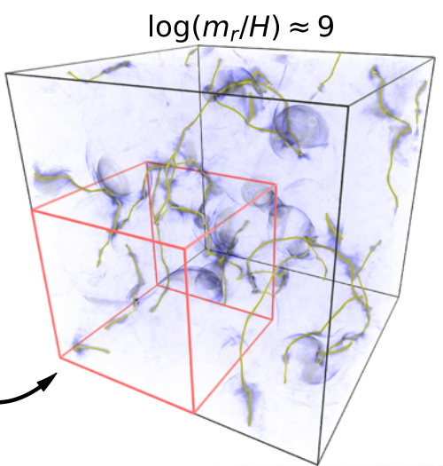
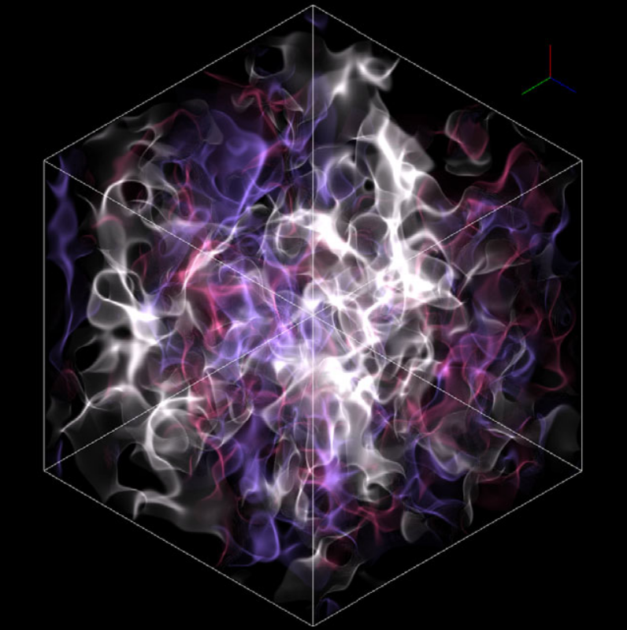

Code Generation For Solving PDEs
Navigation
STvAR: A Space-Time Variable Code Generator and Solver

A schematic of the STvAR code generation method for space and time discretization with adaptive mesh refinement.
As part of the ExaStar team within the DOE Exascale Computing Project, I worked with Adam Peterson to design a code-generation tool for solving the numerical general relativity equations using the AMReX framework for block-structured adaptive mesh refinement.
Although our project's immediate focus was general relativity, the Einstein equations are notoriously lengthy when expanded into numerical form. Translating hundreds of arithmetic terms into computer code would be laborious and it would be very easy to make mistakes.
Thus, we turned to code generation based on the open-source Python package for symbolic mathematics, Sympy. We wrote a python package using Sympy to translate partial differential equations in space and time into C++ computer code computing the arithmetic operations on the variables in these equations.
We used the Method of Lines technique, which replaces all spatial derivatives with finite-difference derivatives, and we implemented high-order derivative stencils for fourth-order accuracy in space.
The Method of Lines approach leaves the time derivatives in the equations symbolic, but it tells us exactly how to compute them using finite-difference discretization for all the other terms in the PDEs.
We then integrated the time derivatives using a Runge-Kutta explicit time integrator of high order, enabling us to reach fourth-order accuracy in time.
Our code generation framework is flexible, allowing us to select the space and time order for the discretization to meet our computational and accuracy requirements.
The resulting code allows us to customize where we focus the adaptive mesh refinement according to the unique needs of the system of equations we are solving.
Black Hole Mergers With Numerical General Relativity

Simulated binary black hole inspiral traces black hole centers through (3+1) spacetime and radiates the characteristic gravitational wave chirp.
Our code-generation research successfully transformed the Einstein equations of general relativity into finite-difference form we could solve with high order spatial stencils and explicit Runge-Kutta time integration.
Because we were interested in studying the dynamics of black hole and neutron star mergers, we needed to focus our computational intensity on critical regions of spacetime, so we used adaptive mesh refinement based on AMReX.
Our techniques enabled efficient, high resolution binary black hole merger simulations predicting the radiated gravitational wave spectrum as observed by gravitational wave detectors such as LIGO.
After verifying our code generated accurate results and scaled well on available supercomputers, we published our research and code description in the journal of Classical And Quantum Gravity.
Exploring Axions As Dark Matter Candidates

Three-dimensional simulation evolving the axion field over cosmological space and time, illustrating the axion energy density and axion string structures at late times in the Universe.
Our code-generation research at Berkeley Lab to solve numerical general relativity soon sparked the interest of Ben Safdi and his collaborators. Their team was studying a hypothesized axion dark matter model they wished to solve on cosmological scales.
They contacted us to explore the possibility of using our techniques to solve the axion field equations with adaptive mesh refinement.
We worked with these researchers to construct a simulation code solving the axion field equations with high order finite differencing while following the axion string evolution with adaptive mesh refinement on the cosmological scales required.
Our collaboration enabled the team to simulate axion string evolution and radiation on cosmological spacetime scales with unprecedented resolution, tightening the cosmological constraints on the range of axion mass-energy by more than a factor of three.
Code Generation for Particle-In-Cell Methods

A graphic showing the code generation process for the Particle-In-Cell Method used in the Emu neutrino quantum kinetics simulation code.
Sometimes transport problems are best solved with Lagrangian techniques, which represent the solution as a collection of particles.
Particles may generally move in any direction with a specific velocity and carry quantities of interest like mass, charge, or quantum state. Particles are often a natural choice for simulating transport because they eliminate common advection errors in continuum transport models.
Particles may interact with each other and possibly with matter or fields extending throughout the simulation domain. Particles are typically a good choice when transport interacts in a complex manner with system dynamics.
Lagrangian solvers are commonly used in applications such as radiation transport, molecular dynamics, and charged-particle electrodynamics.
Working with Sherwood Richers, I developed a framework based on AMReX for evolving equations associated with Lagrangian particles using global Runge-Kutta time integration.
Particle interactions were modelled in the mean-field approximation using a background grid, classifying this technique as a Particle-In-Cell (PIC) Method.
Emu: An Open-Source PIC Solver For Six-Dimensional Neutrino Quantum Kinetics

Three-dimensional, all-angle Particle-in-Cell simulation of a three-flavor neutrino fast flavor instability. Volume rendering shown illustrates the fastest-growing electron-muon neutrino flavor instability, seen in shaded contours which evenly subdivide the angular electron-muon phase at 0 (blue), two-thirds pi (white), and four-thirds pi (red).
This code generation technique for the Particle-In-Cell Method is the backbone of the Emu simulation code I developed with Sherwood Richers to solve the six-dimensional neutrino quantum kinetics problem.
Neutrinos are nearly massless and so move at nearly the speed of light. They carry little mass and no electrical charge, but they do carry a quantum state called flavor in particle physics.
Neutrinos arise in large numbers from core collapse supernovae and neutron star merger events in high-energy astrophysics. In such cases, we naturally model neutrinos as radiation, so the Lagrangian representation was natural given the transport aspect of the problem.
Lagrangian particles represent groups of neutrinos located anywhere in our three-dimensional simulation domain and moving in any of two angular directions covering the unit sphere.
We need to evolve the neutrinos forward in time, making the simulation a very challenging six-dimensional problem.
When we consider the dynamics of evolving the neutrino flavor state due to neutrino-neutrino and neutrino-matter interactions, the mean-field approximation made the Particle-In-Cell Method a natural choice for solving the complex neutrino quantum kinetics equations.
We used code generation to address the complexities of these equations, yielding the Emu simulation code.
Our technique enabled us to simulate the neutrino fast flavor instability in all six dimensions with all three neutrino flavor states.